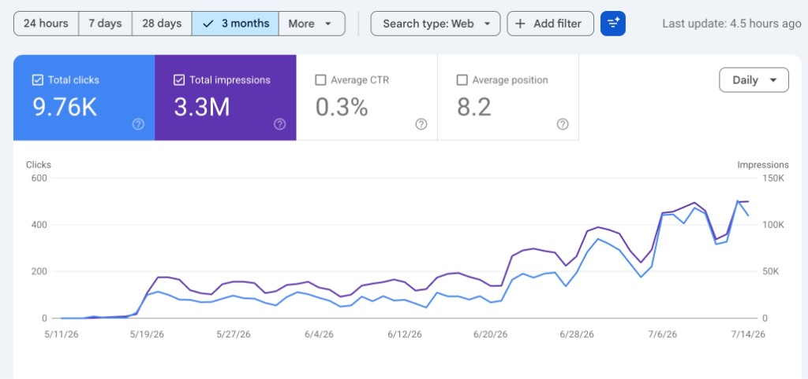
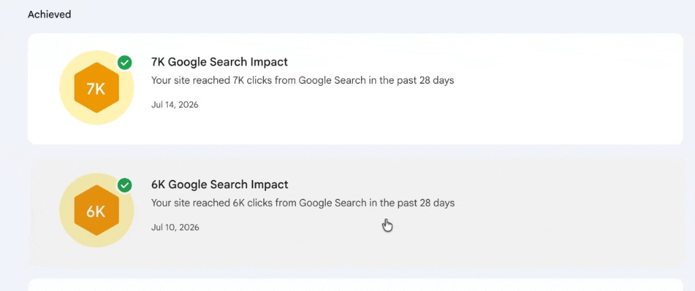

A programmatic Career Hub that reached 9.76K organic clicks in 9 weeks
A 500+ page, statically rendered Next.js estate for Indeed Flex US, built across seven content pillars on an open-source CMS. From a standing start it drew 3.3M search impressions and 9.76K clicks in nine weeks, at near-zero marginal cost per visitor.
An organic engine that ranks whether or not there are open jobs
Indeed Flex acquires hourly and frontline workers in the US. The main site, indeedflex.com, ranks when there are live shifts to list. The moment a market runs quiet, so does its organic presence.
The Career Hub solves that structural gap. It is a persistent library of high-intent job-seeker content (tools, guides, pay data, city and role pages) that captures organic demand 24/7/365, whether or not there are open jobs that week. It builds trust with job seekers first, then funnels them to the app. Because the pages are pre-rendered and served from a CDN, each one costs effectively nothing to serve once built, unlike paid search where every visitor is paid for again and again.
It is also built for how search actually works now. Content answers the question in the first 100 words, carries FAQ and speakable schema, and is structured so Google AI Overviews, ChatGPT and Perplexity can quote it. Answer-engine optimisation (AEO) sits alongside classic SEO from day one.
Two sites, one organic strategy
The Hub was designed as a complement to the existing estate, not a replacement. Two systems, two audiences, one funnel.
The Career Hub itself is a statically generated Next.js application, pre-rendered at build time and served from a CDN, wired to an open-source headless CMS (Sanity) so non-engineers can extend content without touching the build. Fourteen sitemap indexes keep the estate crawlable as it grows.
Seven content pillars, one compounding library
Every page belongs to a pillar. Each pillar targets a distinct slice of job-seeker intent, and each is built to multiply: add a role or a state and the page count grows without new hand-written content.
Interactive Tools
Paycheck calculators across 50 states, plus tax, unemployment, childcare and commute tools. The answer-engine moat.
Programmatic Local SEO
A city×role matrix: 101 cities, 19 active markets and ~500 combination pages with geo-targeting.
Financial & Compliance
50-state tax and unemployment engines, YMYL-grade content, and I-9 / W-4 guides. The W-2 differentiator.
Job Application Toolkit
Resume examples, templates and cover letters, all industry-tailored with ATS framing built in.
Editorial Guides
How-to-become guides, interview question banks, certification guides and honest career evaluations.
Seasonal Content
Summer and holiday hiring pages plus the Wage Report 2026, a year-stamped link-building asset.
Persona Segmentation
Hubs for students, parents, retirees and veterans, plus pay-range and schedule-type pages.
Why some pillars pull harder than others
Three pillars carry most of the strategic weight. The search data (below) shows them doing exactly what they were designed to do.
The AEO moat: AI can summarise an article, but it has to link to a calculator
Google AI Overviews can paraphrase any explainer and keep the click. What they cannot do is replicate a working calculator, so they have to link out to it. Every tool carries SoftwareApplication and FAQ schema to make it machine-readable for AI crawlers. One paycheck-calculator template × 50 states × 20 role presets yields 70+ pages from a single concept, and a dedicated /paycheck-calculator/adp-alternative page goes straight at ADP's branded search.
A city×role matrix that multiplies
Three layers: 19 active-market location pages with LocalBusiness schema, 101 broader city pages with job-market and cost-of-living data, and hyper-local city×role combinations ("bartender jobs Miami", "warehouse associate Chicago"). With 47 roles and 101 cities the matrix holds ~4,700 possible pages; ~500 of the highest-value pairs are live, and every new role or city added multiplies the estate.
The W-2 differentiator that competitors can't copy
Unlike 1099 gig platforms, Indeed Flex workers are W-2: they have tax withholding, unemployment eligibility and access to benefits. That makes financial and compliance content (unemployment rules, W-4 and I-9 guides, tax planning) uniquely relevant and uniquely ours. Every claim is sourced to IRS, DOL and BLS only, and passes a verification queue with specialist sign-off before publishing.
A five-phase loop that improves itself
The estate is not a one-off build. A repeatable loop finds gaps, sources them, writes to a quality bar, gates for accuracy, then ships and monitors for decay, so pages get better over time instead of going stale.
- SEMrush volume
- Perplexity questions
- Gap analysis
- 4-tier source hierarchy
- Gov sources for YMYL
- Source first, write second
- Answer in first 100 words
- Grade-8 readability
- No AI slop
- 6-point checklist
- Specialist sign-off
- Financial verification
- SSG build + deploy
- Decay detection
- Quality scoring
Every page is scored automatically before and after publishing, weighted across five dimensions: Brand 25%, CRAFT 25%, SEO 20%, AEO 15% and Depth 15%. The estate improves itself rather than needing a writer per page.
Strong, compounding early signal
Three months of Google Search Console data (11 May to 14 July 2026), from a domain that started at zero.
The shape matters more than any single number. After the launch ramp settled around 550 to 600 clicks a week, indexation and internal linking compounded into a step-change: weekly clicks roughly 5x'd from mid-June to early July as more of the estate matured and ranked.

Google's own Search Impact milestones started landing days apart: the site cleared 6,000 clicks in a rolling 28-day window on 10 July and 7,000 by 14 July, four days later. Milestones arriving that fast are a direct read-out of a compounding curve, not a one-off spike.

What's driving the clicks
The winners map straight back to the strategy. The unemployment-benefits hub and the state paycheck calculators (Pillars 1 and 3) lead, the W-2 vs 1099 tool and commute calculator prove the AEO-moat thesis, and a seasonal Prime Day 2026 page (Pillar 6) already ranks.
Who's finding it
The audience is exactly right. Traffic is overwhelmingly mobile (78% of clicks), matching how hourly and frontline workers search, and 93% of clicks are from the United States, confirming the pages are geo-targeted to the right market. Spanish-speaking demand across Mexico and Latin America is already showing up in the data, validating the bilingual EN / ES pages baked into the build.
SOURCE Google Search Console, web search, 11 May to 14 July 2026 (site launched from zero). Totals: 9,760 clicks, 3.3M impressions, 0.3% CTR, average position 8.2.